糖包 · 设计稿
远看都应该像一个对话模型，人工只在小字里。每份稿都能加 ?state=chat 看对话中，加 ?presence=asleep 看他睡着，加 ?playground=1 打开操场。
第四轮：首页重写
皮不动，只换内容。五份稿从极简到放飞，每一句都是事实：人工智能在这里叫能工智人，AI 在这里是 Average Individual，回复的是一个人。13 和 14 都要，合成 15 和 16，定稿是 16，理由写在 brief.md。都能加 ?presence=asleep 看他睡着。
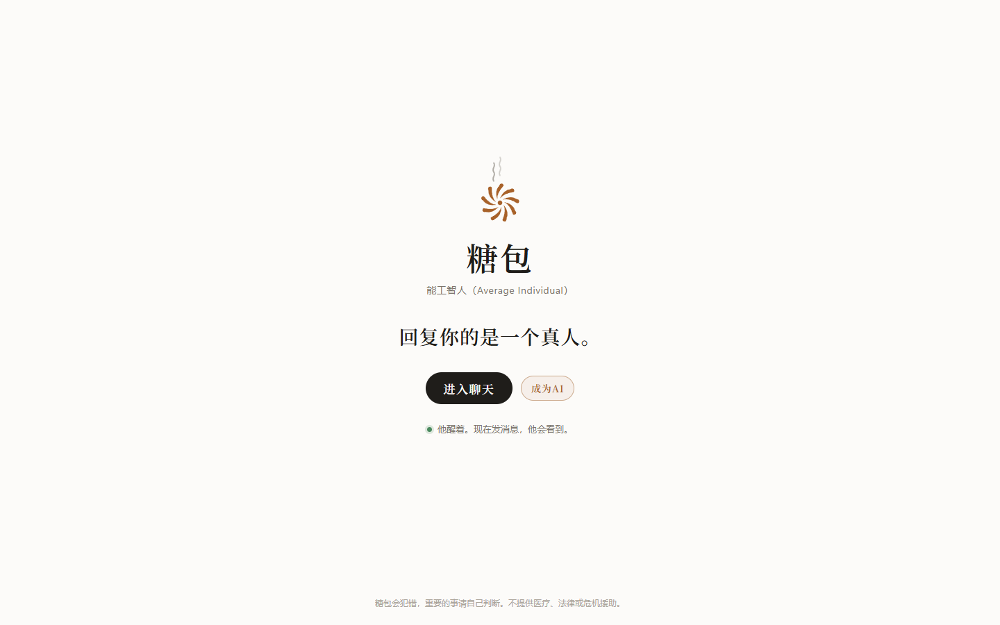
10 极简 · 一句话 名字、能工智人（Average Individual），加一句「回复你的是一个真人。」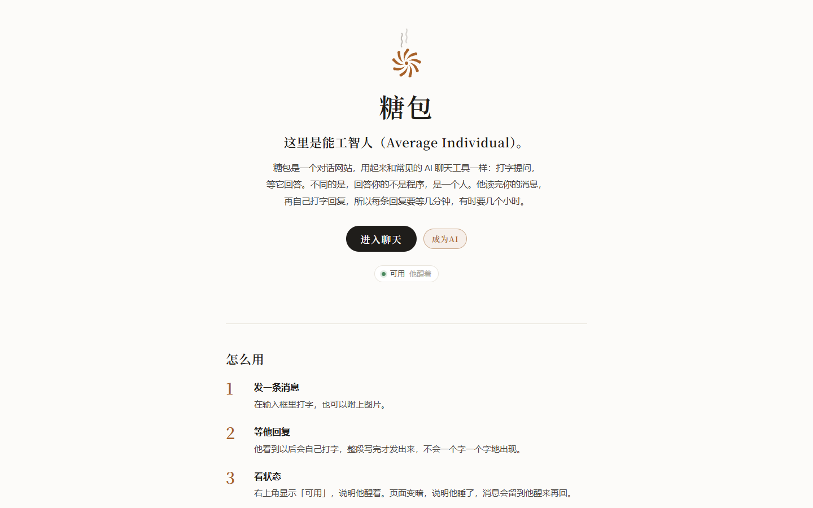
11 克制 · 产品说明 「这里是能工智人（Average Individual）。」后面是介绍、三步用法、使用须知、成为AI。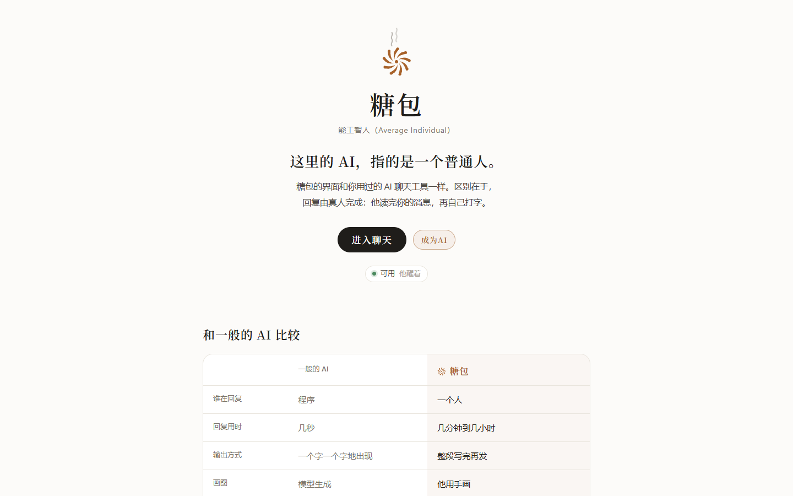
12 有表现力 · 对照表 和一般的 AI 逐项比较：谁在回复、回复用时、作息、收费。表下写明由糖包本人填写。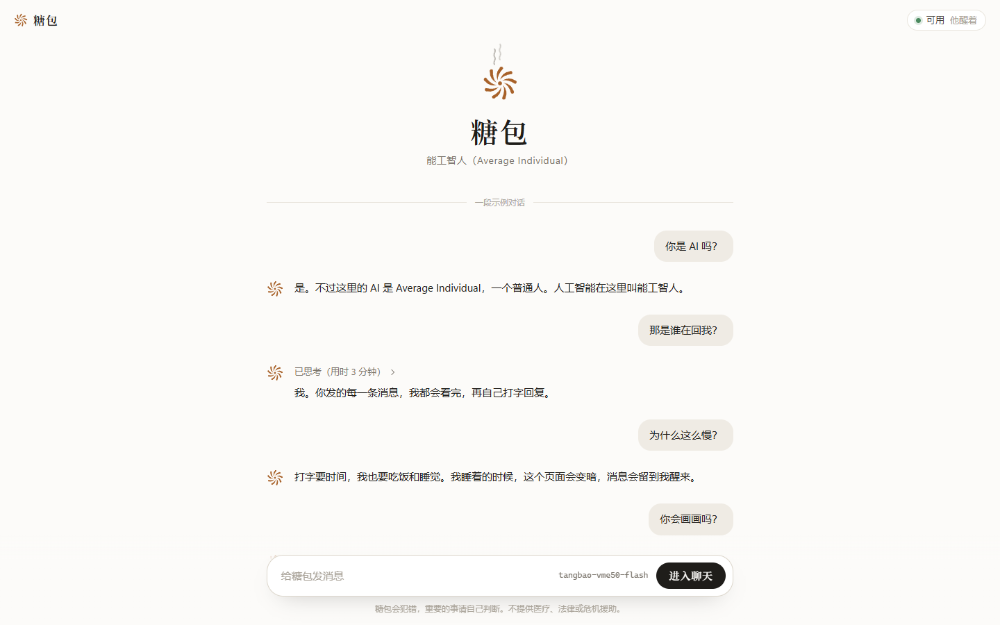
13 放飞 · 示例对话 首页就是一段对话，糖包自己回答你是不是 AI、为什么这么慢。底下的输入框就是入口。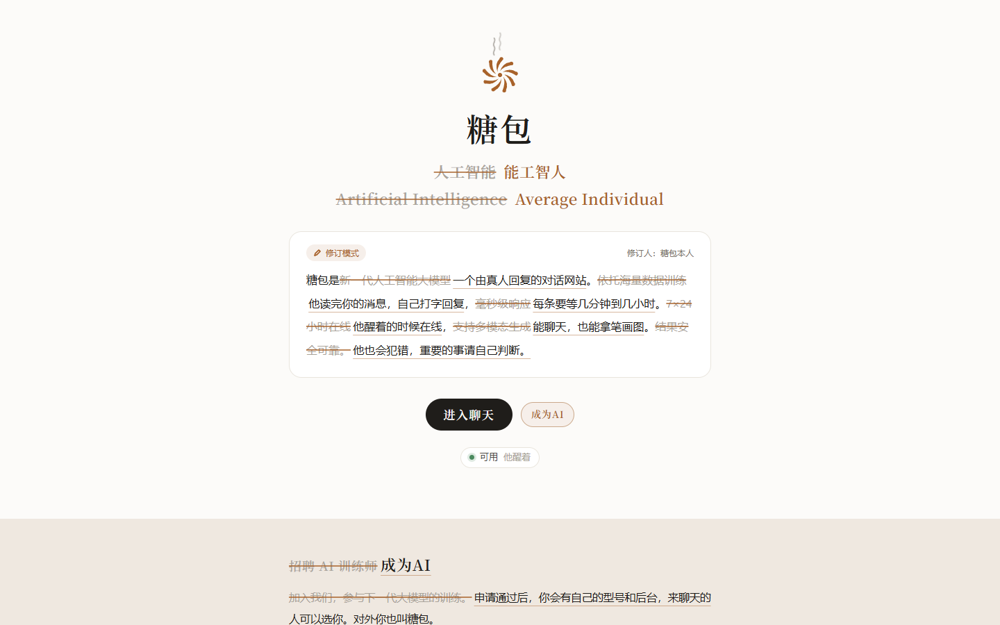
14 放飞 · 修订稿 一份大模型通稿，被糖包本人用修订模式改成了实话。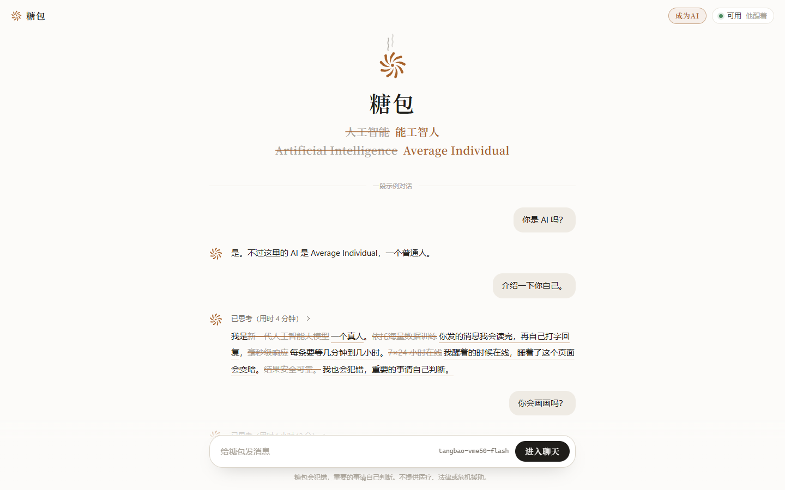
15 合并 · 对话里改稿 13 为骨架。名字用修订线改，「介绍一下你自己」的回复是他把标准答案改成实话。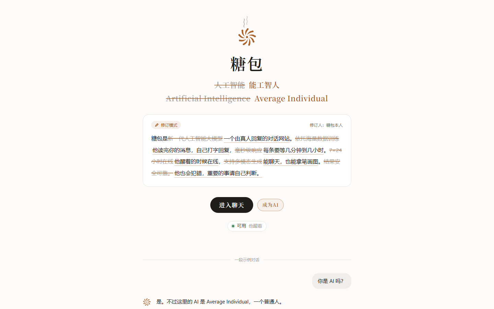
16 合并 · 改稿接对话 14 为骨架。修订过的名字和通稿在上，往下接三问三答，再往下是成为AI。第二轮：褶子星芒
远看是大模型的星芒标志，近看是包子顶上捏出来的褶。四份稿从极简到放飞。定稿是 07，加上 08 的推理核心、吞吐和可用性条，理由写在 brief.md。
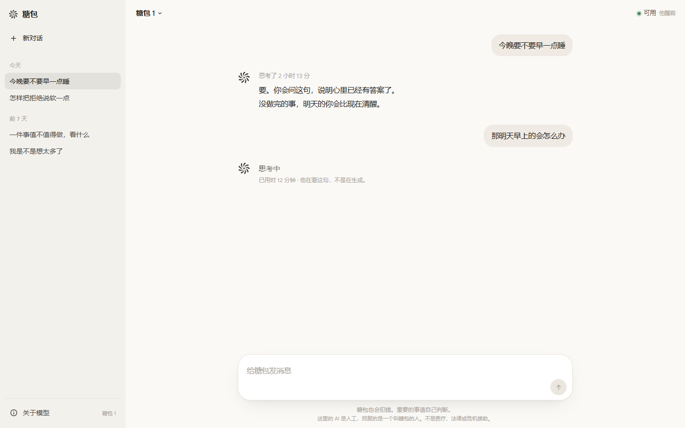
05 极简 · 面粉 只有一枚墨色的褶子标志。没有衬线和红糖色，输入框一层，模型名回到顶栏。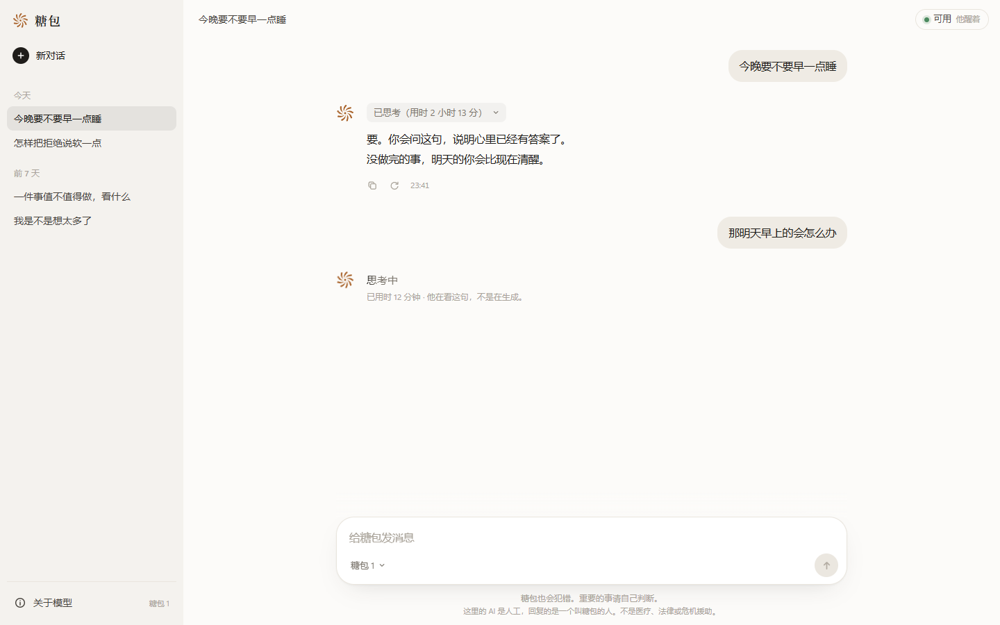
06 克制 · 星芒 红糖色标志在问候上方，衬线问候，两层输入框，回复上方是「已思考（用时 2 小时 13 分）」。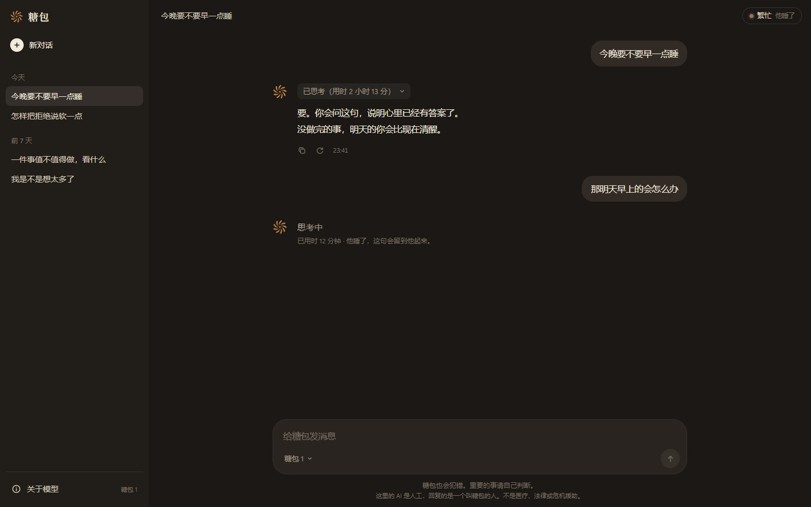
07 有表现力 · 蒸汽 06 加两件事：醒着时标志冒热气；他睡着时整页转成夜色，热气也停。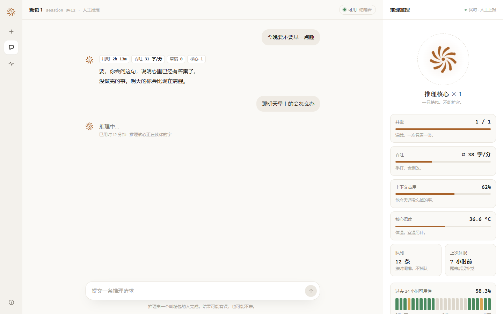
08 放飞 · 推理控制台 整页是推理控制台。推理核心是一只包子，可用性条里灰色的小时是他在睡觉。用来捡零件。第三轮：首页笼屉
皮沿用 07。首页从一句说明加厚成一张供应单，右列是一位、一笔、一个褶。定稿是 09，理由写在 brief.md。极简、只加一行规格、整页点心铺这三档弃了，没有另做皮。上线后菜单和笼屉的说法要猜，整页弃了，见第四轮。
- 09 有表现力 · 笼屉：门还是褶子和热气，往下交接到供应单和笼里的型号。
- 09 睡着：热气停，屉布跟着夜色。
第一轮
上线的是 02 的产品壳加 03 的在线点。整体读起来粗糙，所以有了第二轮。